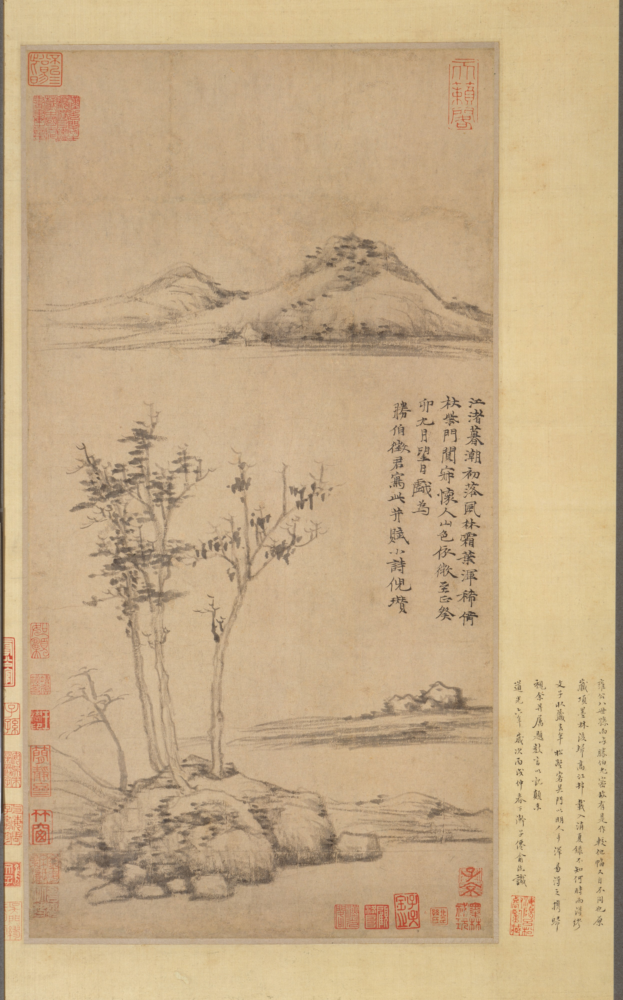
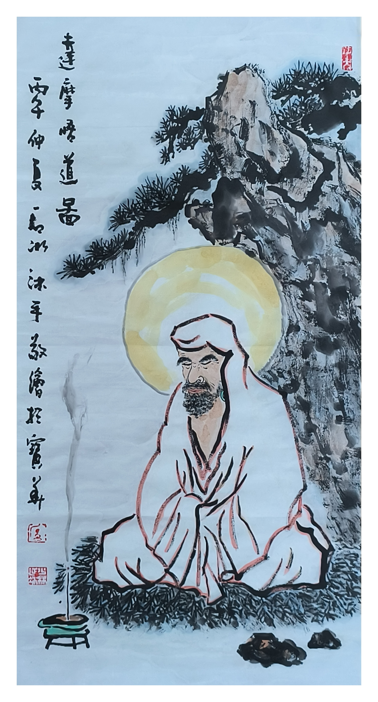
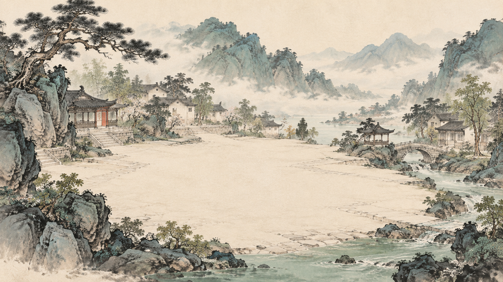

INTERACTIVE DIGITAL EXHIBITION · 2026
三境相连
THREE CONNECTED REALMS
从原作出发，进入墨迹，遇见众相。
三个独立网页，组成一条连续的数字观展路线。



原作、留白与局部笔墨
REALM 01 / FROM THE ORIGINAL
无形之境
先学会停留，再开始进入。
从五件水墨作品出发，通过滚动、局部探索、原作缩放与中英文信息建立观看入口。交互不替代作品，而是帮助观者靠近风、留白、远山、鱼石、衣袍与笔迹。
- 滚动章节与局部探索
- 完整原作查看与缩放
- 声音、语言与低动态模式
REALM 02 / INSIDE THE INK
墨游 · 达摩
让墨迹成为空间，而不是背景。
真实书法墨迹在三维空间中呼吸、避让与聚拢。滚动进入九个作品场景，点击人物回到完整原作；鼠标、长按、双击与声音共同控制观看节奏。
- 无文字沉浸式导览
- Canvas 墨痕与 Three.js 活字
- 九个场景与原作往返
人物、墨迹与原作之间的沉浸式空间
自由镜头中的山水与人物相遇
REALM 03 / BETWEEN FORMS
众相之间
从看一幅画，变成走进一幅画。
观者可以拖动、缩放并自由探索青绿山水。点击不同人物后，镜头缓缓靠近，在场景体验、人物相遇与原作阅读之间往返。
- 自由平移、缩放与镜头复位
- 五位人物与差异化动态
- 场景和原作的并置阅读
PROJECT ARCHIVE / 项目档案
网页本身，
也可以成为展览空间。
传统线上展览常常把作品变成图片列表。本项目尝试保留水墨中的距离、停顿和气韵，让信息、动作、声音与页面路线共同参与策展。
- 我的角色
- 概念策划、数字策展、视觉设计、交互设计、AI-assisted Coding
- 技术
- React、JavaScript、Canvas、WebGL、Three.js、Vinext
- 交互
- 滚动叙事、鼠标视差、自由镜头、局部探索、原作缩放、声音延续
- 项目状态
- 三站公开互动展览，作品集展示真实流程，不虚构用户与商业数据